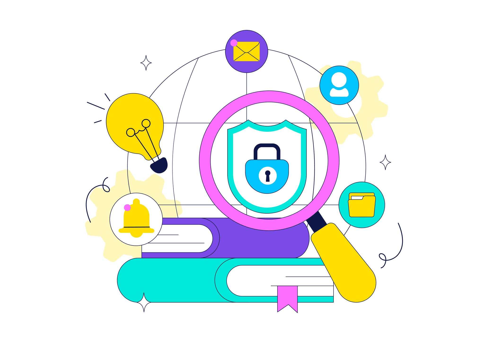

SOURCES & FURTHER READING
References
CyberStart is an educational introduction. The resources below provide further guidance and more detailed information about cybersecurity and online safety.

Information sources
The explanations on this website are written in beginner-friendly language and informed by the following resources. Visit the original sources for current recommendations and detailed guidance.
Cybersecurity and Infrastructure Security Agency (CISA). “Secure Our World.”
Practical recommendations for using strong passwords, enabling multifactor authentication, updating software, and recognizing phishing.
Cybersecurity and Infrastructure Security Agency (CISA). “Recognize and Report Phishing.”
Guidance for recognizing suspicious messages and responding to phishing attempts.
https://www.cisa.gov/secure-our-world/recognize-and-report-phishing
Federal Trade Commission (FTC). “Online Security.”
Consumer guidance on protecting personal information and recognizing common online risks.
https://consumer.ftc.gov/identity-theft-and-online-security/online-security
National Institute of Standards and Technology (NIST). “Cybersecurity.”
Cybersecurity guidance, standards, and resources for understanding and managing risk.
National Initiative for Cybersecurity Careers and Studies (NICCS).
Career and workforce resources related to cybersecurity roles and skills.
TryHackMe.
Interactive cybersecurity learning resources. Use practice labs only within their published rules and authorized scope.
Image and design notes
The illustrations in this project are original, locally stored SVG graphics created for the CyberStart website. The website name, layout, writing, and code are prepared for this WDD131 project. External learning links open in a new tab with appropriate link security attributes.